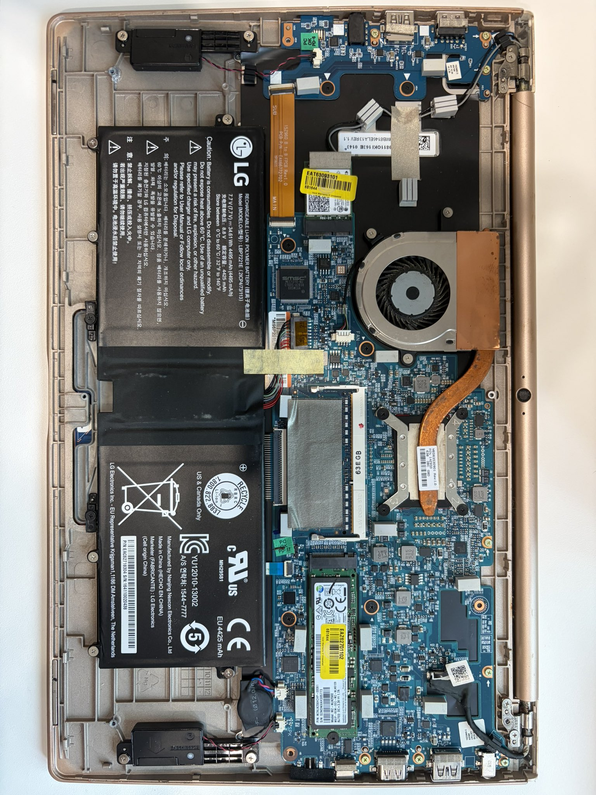
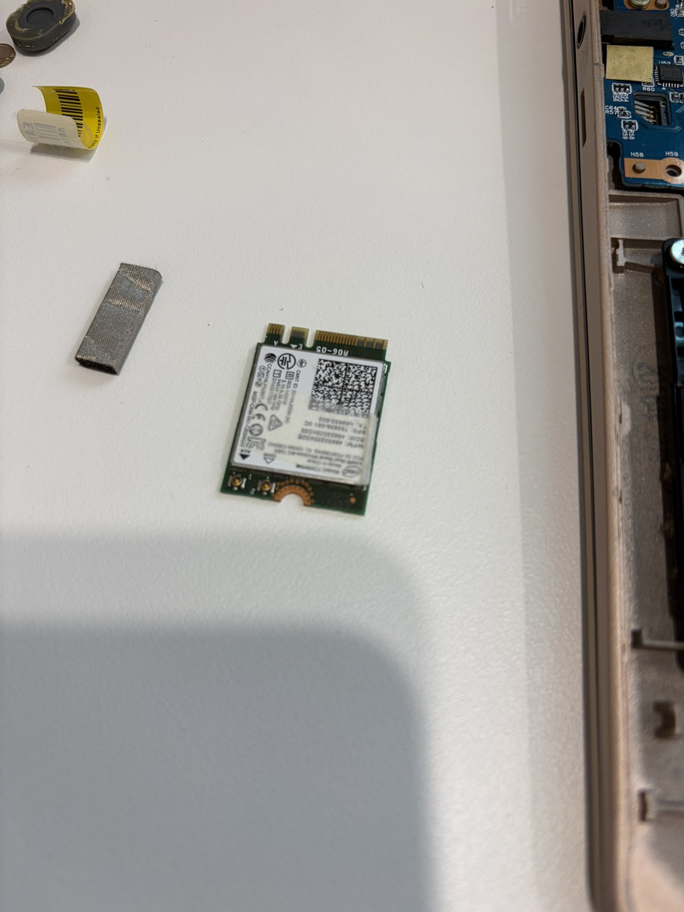

지난 글에 이어서, 이번엔 그 보안 노트북 얘기를 좀 더 이어가 보려 한다.
처음엔 이 기기를 콜드월렛으로 쓸 생각이었다. 니모닉을 여기 담고, 서명은 전부 이 노트북이 하고, 평생 인터넷 근처엔 얼씬도 안 시키는 완벽한 콜드월렛. 그림은 좋았다.
근데 다크스키피(Dark Skippy) 공격을 알게 되면서 방향을 완전히 틀었다.
혹시라도 이 노트북에 다크스키피 같은 게 어떤 식으로든 심어진다면, 서명 과정에 개인키 정보가 몰래 숨어서 그대로 새어나갈 수 있다.
확률로 치면 정말 0%에 가깝다. 근데 문제는 확률이 아니라 "터지면 얼마나 아프냐"다. 0.001%의 확률로 전 재산을 잃는 것과, 100%의 확률로 만 원을 잃는 것 중 뭐가 더 무서운가. 나는 전자였다. 그래서 이 노트북을 콜드월렛이 아니라, 그냥 "정보 금고"로 쓰기로 마음을 고쳐먹었다.
1. 입력과 출력을 극단적으로 줄이다
지금 이 노트북의 입력은 키보드와 카메라, 딱 두 개뿐이다. 출력은 화면 하나.


사실 처음엔 키보드만 남기려고 했다. 근데 그렇게 해보니 너무 답답하더라. 문서 하나 옮기려고 한 글자 한 글자 손으로 타이핑하고 있으면, 이건 보안이 아니라 그냥 수행이다. 그래서 카메라는 살려뒀다. QR이든 사진이든, 눈으로 읽어서 들여보내는 건 허용하기로 했다.
2. 핵심은 '단방향'이다
중요한 건 이거다. 밖에서 이 노트북 안으로는 파일이 들어올 수 있다. 근데 이 노트북 밖으로는 아무것도 못 나간다.
USB로 뭘 꽂아도 못 나가고, 와이파이·블루투스는 이미 물리적으로 뜯어냈으니 못 나가고, 카메라는 애초에 입력 전용 장치라 뭘 내보낼 수가 없다.
들어오는 문은 있어도, 나가는 문은 없다. 일종의 정보 역류 방지 밸브다.
이렇게 해두면, 최악의 경우 이 노트북이 악성코드에 통째로 먹혀도 그 안의 문서가 바깥으로 유출될 방법이 물리적으로 없다. 훔쳐갈 문이 없는데 도둑이 무슨 수로 훔쳐가겠나.
3. 다음 계획 — M-DISC
앞으로는 여기에 M-DISC 드라이브를 하나 물릴 생각이다. USB 포트는 이 M-DISC 드라이브 하나만 허용하고 나머지는 전부 막아버리는 거다.
M-DISC는 한 번 구우면 사실상 반영구적으로 보존된다고 알려진 광디스크다. 여기에 진짜 중요한 보안 서류들을 구워서 저장해둘 생각이다. 이러면 이 노트북 자체가 "읽기 전용 문서 금고"가 되는 셈이다.
보안 노트북 시리즈는 계속된다.